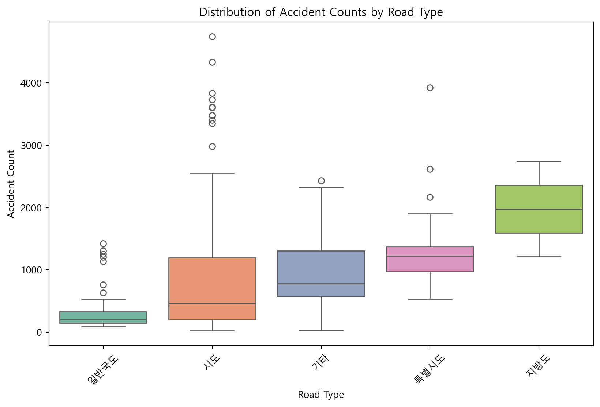
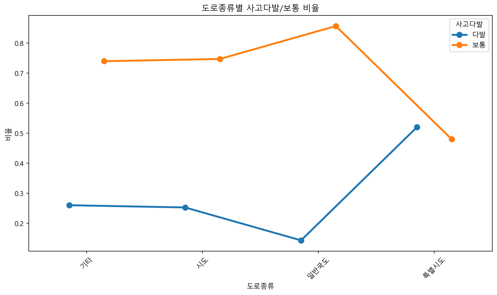
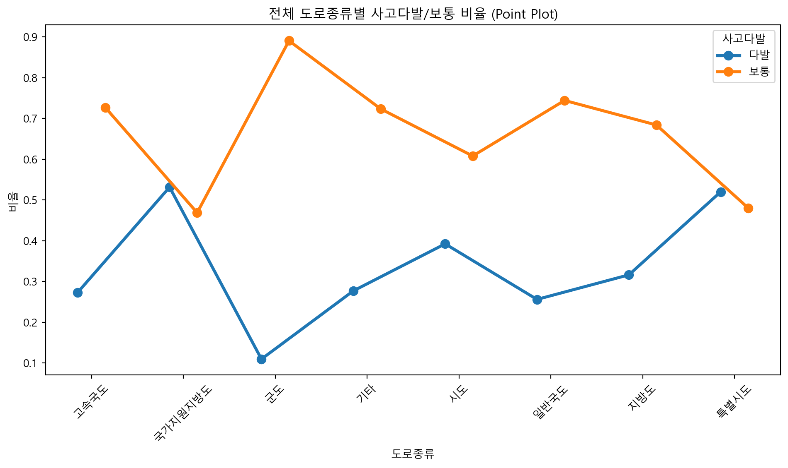
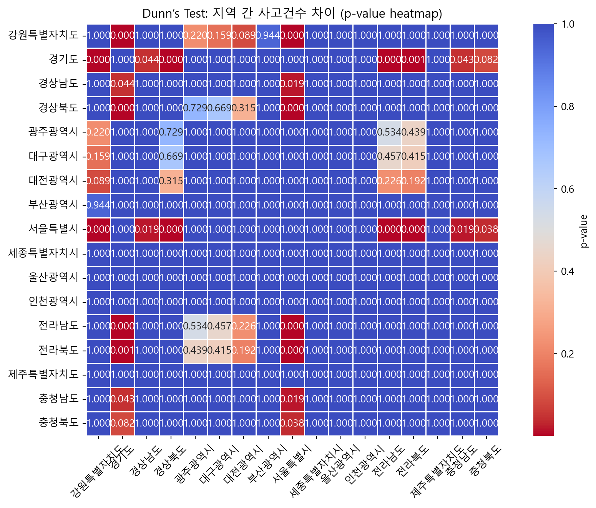
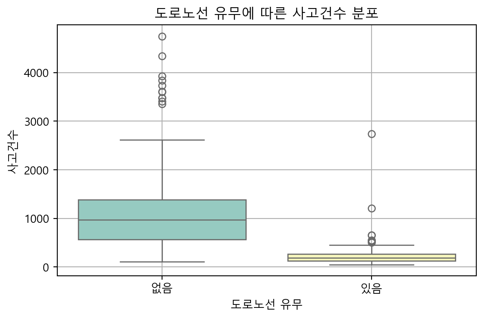
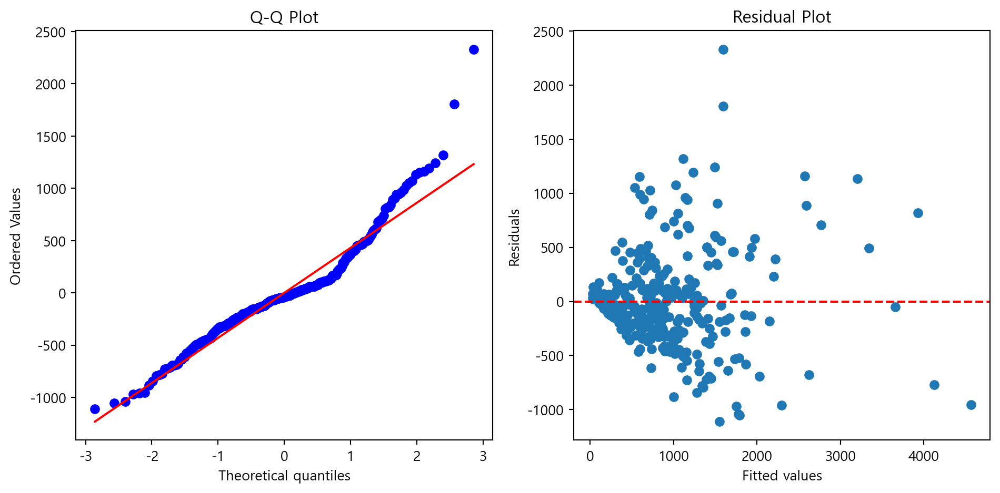

🚦 멈춰! 교통사고!
3조 - LS빅데이터스쿨
교통사고, 당신의 데이터는 알고 있다
Table of content
- 팀 소개
- 프로젝트 개요
- 프로젝트 목적
- 프로젝트 가설
- 분석 진행 및 결과
📌 팀 소개
- 이름: 3조 🎓
- 구성원: 편서영, 한지수, 오상원, 이창혁
📊 프로젝트 개요
- 교통사고는 단순한 운전자 실수만의 문제가 아닙니다! 🚗, 🚕, 🚙
- 전국 단속카메라 설치정보, 도로 속성, 지역 등을 통합하여 탐색!
- 데이터는 말합니다 🕵️ 사고는 예방될 수 있습니다!
🎯 프로젝트 목적
교통사고 발생건수에 영향을 미치는 요인분석
🔍 프로젝트 가설 설정
- 도로 종류에 따라 사고 건수에 유의미한 차이가 있다.
- 각 시도별 사고건수가 차이가 있을 것이다.
- 단속카메라 수가 사고 건수에 영향을 미칠 것이다.
- 도로노선 유무에 따라 사고 건수 차이가 있을 것이다.
🧪 분석진행
- 데이터 출처 및 설명

- 데이터 불러오기
- 데이터 정보 확인
<class 'pandas.core.frame.DataFrame'>
RangeIndex: 27403 entries, 0 to 27402
Data columns (total 21 columns):
# Column Non-Null Count Dtype
--- ------ -------------- -----
0 무인교통단속카메라관리번호 27403 non-null object
1 시도명 27403 non-null object
2 시군구명 27403 non-null object
3 도로종류 27403 non-null object
4 도로노선번호 7964 non-null object
5 도로노선명 27403 non-null object
6 도로노선방향 27403 non-null int64
7 소재지도로명주소 11385 non-null object
8 소재지지번주소 24525 non-null object
9 위도 27403 non-null float64
10 경도 27403 non-null float64
11 설치장소 27403 non-null object
12 단속구분 27403 non-null int64
13 제한속도 27403 non-null int64
14 단속구간위치구분 1123 non-null float64
15 과속단속구간길이 954 non-null float64
16 보호구역구분 27403 non-null int64
17 설치연도 27403 non-null int64
18 관리기관명 27403 non-null object
19 관리기관전화번호 27403 non-null object
20 데이터기준일자 27403 non-null object
dtypes: float64(4), int64(5), object(12)
memory usage: 4.4+ MB
None- 데이터 정보 확인
<class 'pandas.core.frame.DataFrame'>
RangeIndex: 230 entries, 0 to 229
Data columns (total 7 columns):
# Column Non-Null Count Dtype
--- ------ -------------- -----
0 시도명 230 non-null object
1 시군구 230 non-null object
2 사고건수 230 non-null int64
3 사망자수 230 non-null int64
4 중상자수 230 non-null int64
5 경상자수 230 non-null int64
6 부상신고자수 230 non-null int64
dtypes: int64(5), object(2)
memory usage: 12.7+ KB
None- 가설 1 분석 진행 : 지역별 대표도로 사고건수 비교
Code
accident['시도명'] = accident['시도명'].replace('서울', '서울특별시')
accident['시도명'] = accident['시도명'].replace('부산', '부산광역시')
accident['시도명'] = accident['시도명'].replace('경기', '경기도')
accident['시도명'] = accident['시도명'].replace('경남', '경상남도')
accident['시도명'] = accident['시도명'].replace('전남', '전라남도')
accident['시도명'] = accident['시도명'].replace('경북', '경상북도')
accident['시도명'] = accident['시도명'].replace('전북', '전라북도')
accident['시도명'] = accident['시도명'].replace('대구', '대구광역시')
accident['시도명'] = accident['시도명'].replace('울산', '울산광역시')
accident['시도명'] = accident['시도명'].replace('인천', '인천광역시')
accident['시도명'] = accident['시도명'].replace('제주', '제주특별자치도')
accident['시도명'] = accident['시도명'].replace('충남', '충청남도')
accident['시도명'] = accident['시도명'].replace('충북', '충청북도')
accident['시도명'] = accident['시도명'].replace('강원', '강원특별자치도')
accident['시도명'] = accident['시도명'].replace('대전', '대전광역시')
accident['시도명'] = accident['시도명'].replace('세종', '세종특별자치시')
accident['시도명'] = accident['시도명'].replace('광주', '광주광역시')# 사고 다발 정리
theeshold = accident['사고건수'].quantile(0.75)
accident['사고다발'] = accident['사고건수'].apply(lambda x: '다발' if x >= theeshold else '보통')
# 시도 별 대표도로 선정
road_type = camera.groupby('시도명')['도로종류'].agg(lambda x: x.value_counts().index[0]).reset_index(name='대표도로종류')
road_type = road_type.rename(columns={'도로종류': '대표도로종류'})- 가설 1 분석 진행 : 지역별 대표도로 사고건수 비교
| 사고다발 | 다발 | 보통 |
|---|---|---|
| 대표도로종류 | ||
| 기타 | 13 | 37 |
| 시도 | 25 | 74 |
| 일반국도 | 6 | 36 |
| 특별시도 | 13 | 12 |
- 가설 1 분석 진행 : 지역별 대표도로 사고건수 비교
- 카이제곱 동질성 검정 결과
👉 검정 통계량 (Chi²): 11.68
👉 자유도 (df): 3
👉 유의확률 (p-value): 0.008
✅ 차이가 유의미함을 확인! ✅
- 카이제곱 동질성 검정 결과
[!🎯] 대표도로 종류와 사고 다발 사이의 관계가 통계적으로 차이가 있다고 주장할만한 통계적 근거가 충분하다.
- 대표도로 종류별 사고 건수 분포 박스플롯
Code

- 대표도로 종류별 사고 다발 비율 그래프
Code
ct_norm = ct.div(ct.sum(axis=1), axis=0) # 비율로 변환
# 비율 데이터프레임을 long-format으로 변환
ct_long = ct_norm.reset_index().melt(id_vars='대표도로종류', var_name='사고다발', value_name='비율')
plt.figure(figsize=(10, 6))
sns.pointplot(data=ct_long, x='대표도로종류', y='비율', hue='사고다발', dodge=0.3, markers='o', linestyles='-')
plt.xticks(rotation=45)
plt.title('도로종류별 사고다발/보통 비율')
plt.ylabel('비율')
plt.xlabel('도로종류')
plt.tight_layout()
plt.show()
- 도로 종류별 사고 다발 비율 그래프

- Shapiro-Wilk 검정 결과
Code
from scipy.stats import shapiro
def check_normality_by_road_type(all_road):
# 정규성 검정 결과를 저장할 리스트
results = []
# 각 도로종류별로 그룹화하여 정규성 검정
for name, group in all_road.groupby('도로종류'):
stat, p = shapiro(group['사고건수'])
result = '정규분포 아님' if p < 0.05 else '정규분포'
results.append([name, p, result])
# 결과를 데이터프레임으로 변환
df_results = pd.DataFrame(results, columns=['도로종류', 'p-value', '정규분포 여부'])
# 표 출력
return df_results| 도로종류 | p-value | 정규분포 여부 | |
|---|---|---|---|
| 0 | 고속국도 | 6.372202e-78 | 정규분포 아님 |
| 1 | 국가지원지방도 | 4.453160e-29 | 정규분포 아님 |
| 2 | 군도 | 8.578405e-119 | 정규분포 아님 |
| 3 | 기타 | 3.224323e-109 | 정규분포 아님 |
| 4 | 시도 | 1.458738e-146 | 정규분포 아님 |
| 5 | 일반국도 | 6.107652e-135 | 정규분포 아님 |
| 6 | 지방도 | 2.914311e-122 | 정규분포 아님 |
| 7 | 특별시도 | 4.290432e-124 | 정규분포 아님 |
- Kruskal Wallis H 검정 결과
- Kruskal Wallis H 검정 결과
[!🎯] 도로 종류와 사고건수 사이의 분포 차이가 있다고 주장할만한 통계적 근거가 충분하다.
- 가설 2 분석 진행 : 각 시도별 사고건수 간 차이 비교
- 각 지역별 평균 사고건수 확인 및 시각화
- 각 지역별 평균 사고건수 확인
| 시도명 | 사고건수 | |
|---|---|---|
| 14 | 제주 | 1975.000000 |
| 1 | 경기 | 1714.967742 |
| 6 | 대전 | 1479.600000 |
| 4 | 광주 | 1394.400000 |
| 8 | 서울 | 1352.440000 |
| 5 | 대구 | 1208.888889 |
| 9 | 세종 | 1166.000000 |
- 시각화
- 그래프 비교 결과
[!🎯] 지역별 평균 사고건수에 차이가 있을 가능성이 높아 보임!
- ANOVA 검정
👉 H0: 각 지역별 평균 사고건수가 같다.
👉 H1: 각 지역별 평균 사고건수가 적어도 하나는 다르다.
| sum_sq | df | F | PR(>F) | |
|---|---|---|---|---|
| C(시도명) | 55213437.753574 | 16.000000 | 5.600300 | 0.000000 |
| Residual | 131248122.611644 | 213.000000 | nan | nan |
- ANOVA 검정 결과
[!🎯] 각 시도별 평균 사고건수가 적어도 하나는 다르다라고 주장할만한 통계적 근거가 충분하다.
- Kruskal Wallis H 검정 진행
- Kruskal Wallis H 검정 결과
[!🎯] 각 지역별 평균 사고건수의 중앙값이 적어도 하나는 다르다고 주장할 통계적 근거가 충분하다!
- 사후검정 : Dunn’s test 시각화
Code
import scikit_posthocs as sp_post
posthoc = sp_post.posthoc_dunn(accident, val_col='사고건수', group_col='시도명', p_adjust='bonferroni')
# Bonferroni 수정을 통해 가설 검정의 유의수준을 조정
# 시각화
plt.figure(figsize=(10, 7))
sns.heatmap(posthoc,
annot=True,
fmt=".3f",
cmap="coolwarm_r",
cbar_kws={'label': 'p-value'},
linewidths=0.5,
square=True)
plt.title("Dunn’s Test: 지역 간 사고건수 차이 (p-value heatmap)")
plt.xticks(rotation=45)
plt.yticks(rotation=0)
plt.tight_layout()
plt.show()
- 가설 3 분석 진행 : 단속카메라 수는 사고 건수 비교
- 단속카메라 설치 수에 따른 시도별 사고건수 평균 비교
Code
import geopandas as gpd
import plotly.express as px
import plotly.graph_objects as go
# geopandas로 shp 파일 불러오기
gdf = gpd.read_file('../team2/data/BND_SIDO_PG.shp')
print(gdf.crs) # 좌표계 확인
gdf = gdf.to_crs(epsg=4326) # WGS84 (4326) 좌표계로 변환
# GeoJSON 파일로 저장
gdf.to_file('../team2/data/BND_SIDO_PG.geojson', driver='GeoJSON')
# geojson 파일 불러오기
import json
with open('../team2/data/BND_SIDO_PG.geojson', encoding='utf-8') as f:
geojson_data = json.load(f)
print(geojson_data.keys()) # 확인 용도
print(geojson_data['features'][1]['properties']) # 확인 용도
# 카메라 데이터에서 groupby로 시도별 카메라 수 집계한 DataFrame 생성
agg_cam = camera.groupby('시도명',as_index=False)['무인교통단속카메라관리번호'].count()
agg_cam.columns = ['SIDO_NM','카메라합계']Code
# plotly 로 지도 시각화
fig = px.choropleth_mapbox(
agg_cam,
geojson=geojson_data,
locations="SIDO_NM",
featureidkey="properties.SIDO_NM",
color="카메라합계",
color_continuous_scale="Blues",
mapbox_style="carto-positron",
center={"lat": 37.5665, "lon": 126.9780},
zoom=5,
opacity=1,
title="시도 별 카메라 수",
)
fig.update_layout(margin={"r":0,"t":30,"l":0,"b":0})
fig.show()# 컬럼명 통일0
camera_count = c_df.groupby(['시도명', '시군구명']).size().reset_index(name='단속카메라수')
camera_count.rename(columns={'시군구명': '시군구'}, inplace=True)
# 사고건수와 병합
camera_merged_df = pd.merge(camera_count, accident_df.groupby(['시도명', '시군구'])['사고건수'].sum().reset_index(), on=['시도명', '시군구'])
# 사분위수 기반 그룹 나누기 (많음/ 보통/ 적음)
q1 = camera_merged_df['단속카메라수'].quantile(0.25)
q3 = camera_merged_df['단속카메라수'].quantile(0.75)
def classify_group(x):
if x <= q1:
return '적음'
elif x >= q3:
return '많음'
else:
return '보통'
camera_merged_df['그룹'] = camera_merged_df['단속카메라수'].apply(classify_group)- ANOVA 검정 진행
from scipy.stats import f_oneway
group_적음 = camera_merged_df[camera_merged_df['그룹'] == '적음']['사고건수']
group_보통 = camera_merged_df[camera_merged_df['그룹'] == '보통']['사고건수']
group_많음 = camera_merged_df[camera_merged_df['그룹'] == '많음']['사고건수']
f_stat, p_value = f_oneway(group_적음, group_보통, group_많음)
# p-value < 0.05, 귀무가설 기각| F-통계량 | p-값 | |
|---|---|---|
| 0 | 43.666575 | 0.000000 |
👉 H0: 세 그룹의 모집단 평균은 모두 같다. (차이가 우연에 의한 것)
👉 H1: 세 그룹 중 적어도 하나는 평균이 다르다.
- Shapiro-Wilk / Levene 검정 결과
Code
results = []
# shapiro: 정규성 검정
from scipy.stats import shapiro
for name, group in zip(['적음', '보통', '많음'], [group_적음, group_보통, group_많음]):
stat, p = shapiro(group)
norm_check = '정규분포 O' if p > 0.05 else '정규분포 X'
results.append([name, round(p, 4), norm_check])
# Levene: 등분산성 검정
from scipy.stats import levene
stat, p = levene(group_적음, group_보통, group_많음)
equal_check = '등분산 O' if p > 0.05 else '등분산 X'
results.append(['등분산성 검정', round(p, 4), equal_check])
df_results = pd.DataFrame(results, columns=['그룹', 'p-value', '여부'])
df_results| 그룹 | p-value | 여부 | |
|---|---|---|---|
| 0 | 적음 | 0.0000 | 정규분포 X |
| 1 | 보통 | 0.0000 | 정규분포 X |
| 2 | 많음 | 0.0003 | 정규분포 X |
| 3 | 등분산성 검정 | 0.0000 | 등분산 X |
- Kruskal Wallis H 검정 진행
- Kruskal Wallis H 검정 결과
[!🎯] 세 그룹의 중앙값이 적어도 하나는 다르다 주장할 통계적 근거가 충분하다!
- 사후검정 : Dunn’s test
Code
import scikit_posthocs as sp
dunn_result = sp.posthoc_dunn(camera_merged_df, val_col='사고건수', group_col='그룹', p_adjust='bonferroni')
# 결과를 쌍별 비교 형식으로 변환
pairs = []
for i, group_a in enumerate(dunn_result.index):
for j, group_b in enumerate(dunn_result.columns):
if i < j: # 중복 제거 (한 번만 비교)
pairs.append({
'그룹 A': group_a,
'그룹 B': group_b,
'p-value': dunn_result.iloc[i, j]
})
# 정리된 데이터프레임 만들기
dunn_pairs_df = pd.DataFrame(pairs)
dunn_pairs_df| 그룹 A | 그룹 B | p-value | |
|---|---|---|---|
| 0 | 많음 | 보통 | 1.598669e-07 |
| 1 | 많음 | 적음 | 1.399293e-16 |
| 2 | 보통 | 적음 | 6.733709e-05 |
- 가설 4 분석 진행 : 도로노선 유무는 따라 사고 건수 차이 비교
# 도로노선번호가 존재하는 경우만 True, 아니면 False
c_df['도로노선있음'] = c_df['도로노선번호'].notna()
# 시군구별 도로노선 유무 중 가장 많은 상태값 기준
roadline_status = c_df.groupby(['시도명', '시군구명'])['도로노선있음'] \
.agg(lambda x: x.value_counts().index[0]) \
.reset_index(name='도로노선유무')
roadline_status.rename(columns={'시군구명': '시군구'}, inplace=True)
accident_with_roadline = pd.merge(
accident_df[['시도명', '시군구', '사고건수']],
roadline_status,
on=['시도명', '시군구'])Code
accident_with_roadline['도로노선유무'] = accident_with_roadline['도로노선유무'].map({True: '있음', False: '없음'})
plt.figure(figsize=(6, 4))
sns.boxplot(data=accident_with_roadline, x='도로노선유무', y='사고건수', palette='Set3')
plt.title('도로노선 유무에 따른 사고건수 분포')
plt.xlabel('도로노선 유무')
plt.ylabel('사고건수')
plt.grid(True)
plt.tight_layout()
plt.show()
- 독립 2표본 T 검정
from scipy.stats import shapiro, ttest_ind, mannwhitneyu
group_with = accident_with_roadline[accident_with_roadline['도로노선유무'] == '있음']['사고건수']
group_without = accident_with_roadline[accident_with_roadline['도로노선유무'] == '없음']['사고건수']
t_stat, p_value = ttest_ind(group_with, group_without, equal_var=False)
results = t_stat, p_value- 독립 2표본 T 검정
| 비교 항목 | p_value | 여부 | |
|---|---|---|---|
| 0 | 도로노선 유무에 따른 사고건수 비교 | 0.000 | 차이 있음 |
- Shaprio-Wilk 검정 / Mann-Whitney U 검정
- Shaprio-Wilk 검정 / Mann-Whitney U 검정
| 도로노선유무 / 검정 | p-value | 판정 | |
|---|---|---|---|
| 0 | 도로노선 있음 | 0.000000 | 정규분포 아님 |
| 1 | 도로노선 없음 | 0.000000 | 정규분포 아님 |
| 2 | Mann-Whitney U 검정 | 0.000000 | 유의한 차이 있음 |
- Levene 검정 / Brunner Munzel 검정
- Levene 검정 / Brunner Munzel 검정
| 검정 | p-value | 판정 | |
|---|---|---|---|
| 0 | Levene | 0.000000 | 등분산 아님 |
| 1 | BM | 0.000000 | 분포위치 동일 X |
- Brunner Munzel 검정 결과
[!🎯] 두 그룹 간의 중앙값에 유의미한 차이가 있다고 주장할만한 통계적 근거가 충분하다.
즉, 도로노선 유무에 따라 사고 건수 분포에 통계적으로 유의미한 차이가 존재하다 주장 가능함!
- 회귀모델 분석 진행
camera['도로노선있음'] = camera['도로노선번호'].notna()
camera.rename(columns={'시군구명': '시군구'}, inplace=True)
camera_count = camera.groupby(['시도명', '시군구']).size().reset_index(name='단속카메라수')
camera_merged_df = pd.merge(camera_count, accident.groupby(['시도명', '시군구'])['사고건수'].sum().reset_index(), on=['시도명', '시군구'])
merged_df = pd.merge(camera_merged_df, camera[['시도명', '시군구', '도로종류', '도로노선있음']], on=['시도명', '시군구'])
summary_df = (
merged_df.groupby(['시도명', '시군구'])
.agg({
'단속카메라수': 'first',
'사고건수': 'first',
'도로노선있음': 'mean' # True 비율
})
.reset_index()
)
# 컬럼명 정리
summary_df = summary_df[['시군구', '단속카메라수', '사고건수', '도로노선있음']]
summary_df.rename(columns={'도로노선있음': '도로노선비율'}, inplace=True)- 회귀모델 분석 진행
pop_df = pd.read_csv('../team2/data/시군구_별_인구수.csv')
pop_df = pop_df.rename(columns={pop_df.columns[0]: '시군구', pop_df.columns[1]: '인구수'})
pop_df = pop_df[~pop_df['시군구'].str.contains('총인구수|행정구역')] # 불필요한 행 제거
pop_df = pop_df.dropna() # 혹시 모를 NaN 제거
pop_df['인구수'] = pop_df['인구수'].astype(int)
final_df = pd.merge(summary_df, pop_df, on='시군구', how='left')- 회귀모델 분석 진행
- 종속변수 y : 교통사고 발생 건수
- 독립변수 X : 단속카메라 수, 도로노선비율, 인구수 / 시군구 별
OLS Regression Results
==============================================================================
Dep. Variable: 사고건수 R-squared: 0.695
Model: OLS Adj. R-squared: 0.692
Method: Least Squares F-statistic: 244.1
Date: Thu, 17 Apr 2025 Prob (F-statistic): 1.38e-82
Time: 20:03:37 Log-Likelihood: -2449.5
No. Observations: 326 AIC: 4907.
Df Residuals: 322 BIC: 4922.
Df Model: 3
Covariance Type: nonrobust
==============================================================================
coef std err t P>|t| [0.025 0.975]
------------------------------------------------------------------------------
Intercept 110.4797 55.679 1.984 0.048 0.939 220.021
단속카메라수 3.2748 0.384 8.517 0.000 2.518 4.031
도로노선비율 -305.3707 109.047 -2.800 0.005 -519.905 -90.836
인구수 0.0022 0.000 12.598 0.000 0.002 0.003
==============================================================================
Omnibus: 71.350 Durbin-Watson: 1.188
Prob(Omnibus): 0.000 Jarque-Bera (JB): 196.981
Skew: 1.004 Prob(JB): 1.68e-43
Kurtosis: 6.236 Cond. No. 1.39e+06
==============================================================================
Notes:
[1] Standard Errors assume that the covariance matrix of the errors is correctly specified.
[2] The condition number is large, 1.39e+06. This might indicate that there are
strong multicollinearity or other numerical problems.- Adj. R-squared: 0.699로 설명력이 높은 모델임을 확인!
- Prob (F-statistic): 2.44e-87로 유의미한 회귀 모델임을 확인!
- OLS 결과 분석
| 변수 | coef | p | 0.025 | 0.975 | |
|---|---|---|---|---|---|
| 0 | Intercept | 110.480 | 0.048 | 0.939 | 220.021 |
| 1 | 단속카메라수 | 3.275 | 0.000 | 2.518 | 4.031 |
| 2 | 도로노선비율 | -305.371 | 0.005 | -519.905 | -90.836 |
| 3 | 인구수 | 0.002 | 0.000 | 0.002 | 0.003 |
모든 회귀계수의 p-value가 유의수준 5%하에 유의미한 변수임
단속카메라수의 양의 계수
실제로는 “사고가 많은 지역에 카메라를 더 설치”하는 경향이 있음
역인과 가능성이 존재

- 잔차의 정규성 검정
| 검정 | p-value | 판정 | |
|---|---|---|---|
| 0 | shapiro | 0.000000 | 정규성 X |
잔차 그래프와 정규성 검정, Durbin-Watson 통계량값을 통해 오차항의 가정을 모두 위반하는 것을 확인!
👉 따라서 해당 검정 결과의 신뢰도가 다소 떨어질 수 있다.
👉 적합한 모델을 새로 설정하여 분석하는 것이 타당해보인다.
🎯 결론
- 가설에 대한 검증
앞서 진행한 검정 결과를 바탕으로, 도로종류, 시도별, 단속카메라 수, 도로노선 유무는 교통사고 발생 건수와 통계적으로 유의미한 요인임을 확인할 수 있었다.
- 한계점
- 회귀모델 잔차분석 결과에 따라 모델 분석 결과의 신뢰도가 떨어질 수 있다.
- 한정된 데이터로 만든 모델이기 때문에 일반화가 가능한지를 판단하기 위해 추후 민감도 분석이 필요해보인다.
- 분석 요인 외에 교통사고 발생 건수와 관련있는 요인을 변수로 추가하여 분석을 진행한다면 보다 유의미한 결과를 도출할 수 있을 것으로 보인다.
📮 감사합니다!
발표를 들어주셔서 감사합니다 💕